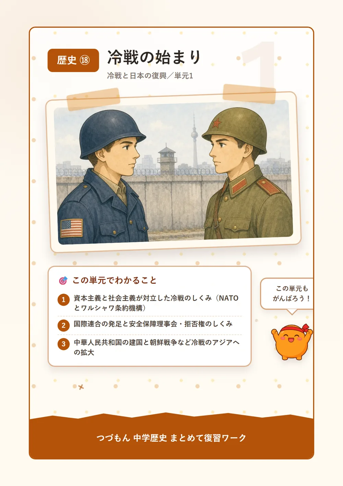
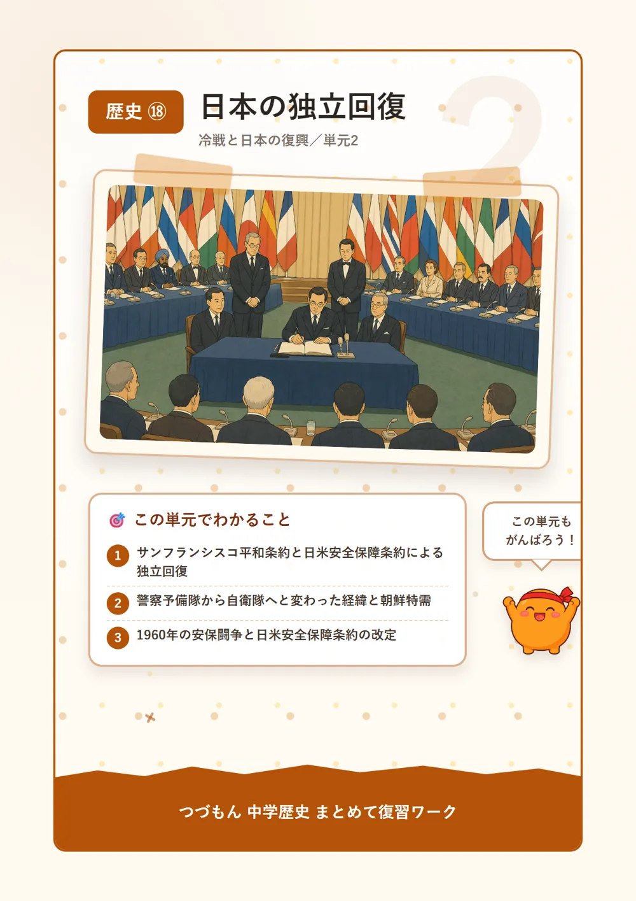
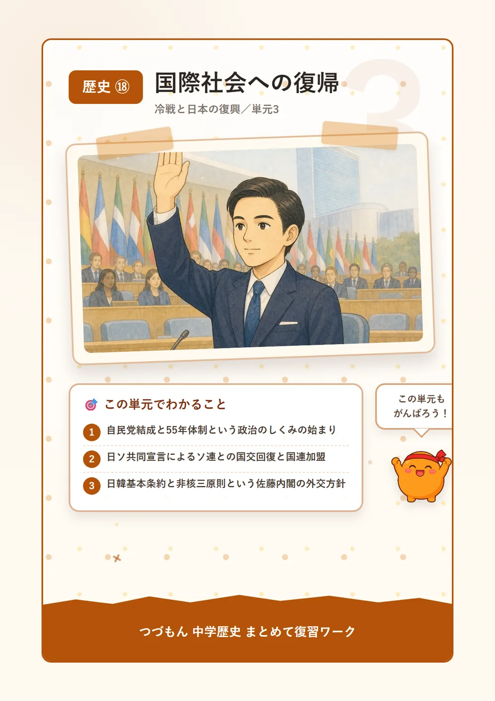
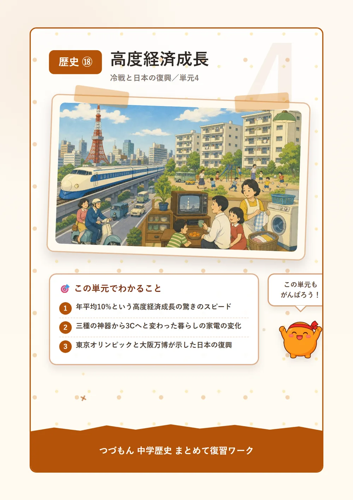
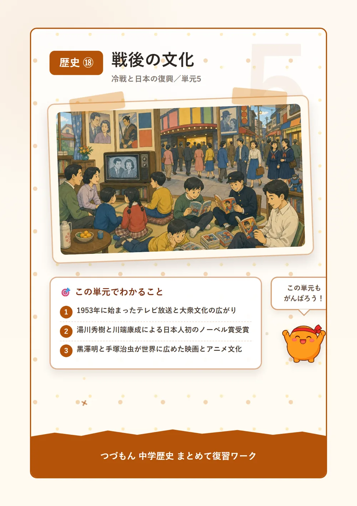

冷戦と日本の復興

冷戦の始まり

1「冷戦」ってどんな対立?
戦争が終わると、自由な経済を大事にする資本主義の国ぐにと、国が経済を仕切る社会主義の国ぐにが、世界を二つに分けて対立するようになったんだ。アメリカを中心とする西側と、ソ連を中心とする東側だね。おもしろいのは、この対立、実際に戦車や兵士がぶつかり合う戦争にはならなかったこと。武器や経済の力でにらみ合うだけの、いわば"冷たい戦争"、これを冷戦と呼ぶんだ。1949年には西側が軍事同盟のNATOを結成し、1955年にはソ連たち東側も対抗してワルシャワ条約機構を作ったよ。
2世界平和を目指した国際連合
実は冷戦が始まる前、1945年に、二度と大きな戦争を起こさないようにと国際連合が発足していたんだ。原加盟国は51か国、本部はニューヨークに置かれたよ。その中心にあるのが安全保障理事会。世界の平和を守る大事な役目を持っていて、アメリカ・イギリス・フランス・ロシア・中国の5つの常任理事国がいるんだ。おもしろいことに、この5か国はたった1国が反対するだけで決議を止められる「拒否権」という強い力を持っているんだよ。すごいでしょ?
3冷戦、アジアにも広がる
冷戦の対立は、ヨーロッパだけじゃなくアジアにも広がっていったんだ。1949年、毛沢東が率いる共産党が内戦に勝利して中華人民共和国を建国し、敗れた国民党は台湾へ逃れたよ。そして1950年、北朝鮮が韓国に攻め込んで朝鮮戦争が始まったんだ。アメリカ中心の国連軍と中国が支援する北朝鮮側が激しく戦い、1953年にようやく休戦したよ。実はこの戦争、今も平和条約が結ばれていないって知ってた?さらに1960年から75年にかけては、社会主義の北ベトナムとアメリカが支援する南ベトナムが戦うベトナム戦争も起こり、アメリカは介入したものの敗れて撤退することになったんだ。
4冷戦の緊張が最高潮に達した瞬間
冷戦の対立をひときわ強く感じさせる出来事も起きたよ。1961年、東ドイツは東西ベルリンを分けるベルリンの壁を築いたんだ。自由を求めて逃げる人々を止めるためだったんだね。そして1962年には、ソ連がキューバにミサイル基地を作ろうとしたことでアメリカと激しく対立するキューバ危機が起こり、世界は核戦争一歩手前まで緊張したんだ。幸い戦争にはならず、話し合いで危機を乗り越えたんだよ。このベルリンの壁は、1989年に市民の手によって取り壊されるまで、実に28年間も東西を隔て続けたんだ。
日本の独立回復

1サンフランシスコ平和条約と独立
1951年、吉田茂内閣は連合国48か国との間にサンフランシスコ平和条約を結んだんだ。実は同じ日に、米軍が日本にとどまることを認める日米安全保障条約にも調印していたんだよ。翌1952年に条約が発効すると、日本はようやく独立を回復し、約7年間続いたGHQの占領が終わったんだ。ちなみにソ連はこの条約への調印を拒否していて、ソ連との関係はまた別の形で解決することになるよ。戦争に負けてから6年、ようやく自分の国のことを自分たちで決められるようになったんだね。
2朝鮮戦争がもたらした変化
1950年に朝鮮戦争が始まると、GHQの指令で警察予備隊という組織がつくられたんだ。これが1952年に保安隊、1954年には自衛隊へと形を変えていったよ。同時に、朝鮮戦争にともなう軍需物資の注文が日本に集中する「朝鮮特需」という好景気も起こり、日本経済の復興を大きく後押ししたんだ。戦争が遠く離れたところで、思わぬ形で日本の暮らしに影響していたんだね。警察予備隊は最初こそ小さな組織だったけど、少しずつ規模を広げながら今の自衛隊へとつながっていったんだよ。
3安保闘争、国民の声が渦巻いた1960年
1960年、岸信介内閣は日米安全保障条約を改定し、日本とアメリカのどちらかが攻撃されたら助け合うことを明確にしたんだ。でもこの改定には、戦争に巻き込まれるのではという不安から強く反対する声が上がり、学生や労働組合、市民が連日国会前に集まる安保闘争という大規模な運動になったよ。結局、条約は成立したものの、岸内閣は混乱の責任を取って退陣することになったんだ。戦後最大規模ともいわれるこの反対運動は、当時の若者たちの政治への強い関心を映し出す出来事でもあったんだよ。
4沖縄、ついに日本へ
1972年、佐藤栄作内閣のもとで、ついに沖縄返還が実現したんだ。1945年の沖縄戦から数えると、なんと27年間も米軍の統治が続いていたんだよ。この間、沖縄では日本円ではなくドルが使われ、車も右側通行だったりと、本土とはちがう暮らしが続いていたんだ。長い年月を経てようやく沖縄が日本に復帰したこの出来事は、戦後日本にとって大きな節目のひとつだったんだね。沖縄の人々が本土復帰を心から待ち望んでいたことを思うと、この日の重みがより深く感じられるよね。
国際社会への復帰

155年体制の始まり
1955年、それまで分かれていた自由党と日本民主党が合同し、自由民主党(自民党)が結成されたんだ。これをきっかけに、自民党が長く政権を担い、日本社会党が主な野党として向き合う55年体制という政治のしくみが始まったよ。この体制は1993年まで、なんと40年近くも続くことになるんだ。長いよね。この保守合同を進めたのが鳩山一郎で、政権が安定したことで、日本はこのあと経済成長にじっくり力を注げるようになっていくんだよ。
2ソ連との国交回復と国連加盟
1956年、鳩山一郎内閣は日ソ共同宣言を結び、ソ連との戦争状態をようやく終わらせて国交を回復させたんだ。実はこれがきっかけとなって、同じ年に日本は国際連合への加盟を果たすことができたんだよ。サンフランシスコ平和条約に調印しなかったソ連との関係を解決したことが、国際社会に完全に復帰するための最後のピースになったんだね。国連に加盟したことで、日本はようやく世界の一員として発言できる立場を手に入れたんだ。
3近隣国との条約、そして非核三原則
1965年、佐藤栄作内閣は日韓基本条約を結んで韓国と国交を樹立し、経済協力も約束したんだ。さらに1967年には、佐藤首相が「核兵器を持たず、作らず、持ち込ませず」という非核三原則を表明したよ。この方針は今も日本の核政策の基本になっていて、佐藤栄作が1974年にノーベル平和賞を受賞した理由のひとつにもなったんだ。唯一の被爆国として核を持たないと宣言したこの方針は、世界からも高く評価されたんだよ。
4中国との国交正常化
1972年、田中角栄内閣は中国を訪れて日中共同声明を発表し、中華人民共和国との国交を正常化したんだ。ただし、これによってそれまで国交のあった台湾の中華民国とは断交することになったよ。そして1978年、福田赳夫内閣がこの関係を正式な条約として確定させる日中平和友好条約を結んだんだ。声明から条約まで、6年もかかったんだね。田中角栄は「日本列島改造論」を掲げるなど内政でも注目を集めた首相で、外交と経済の両面で戦後日本を大きく動かした人物なんだよ。
高度経済成長

110年で驚きの急成長
1955年から1973年にかけて、日本経済は年平均約10%という驚くべきスピードで成長を続けたんだ。この時期を高度経済成長と呼ぶよ。あまりの急成長ぶりに「東洋の奇跡」と呼ばれ、日本はアメリカに次ぐ世界第2位の経済大国にまで上りつめたんだ。戦争で焼け野原になった国が、たった十数年でここまで復活するなんて、すごいよね。工場では新しい機械がどんどん導入され、人々の働き方や暮らし方も大きく変わっていった時代だったんだ。
2暮らしを変えた新しい家電たち
1950年代後半になると、電気冷蔵庫・洗濯機・白黒テレビの3つが家庭に広まり、これを三種の神器と呼ぶようになったんだ。1960年代にはさらに、カー(自動車)・カラーテレビ・クーラーの3Cが普及していったよ。家事や暮らしがどんどん便利になっていく様子を、当時の人たちはきっとワクワクしながら見ていたんじゃないかな。それまで手作業だった洗濯や、氷を使った冷蔵庫での保存が、電気の力であっという間に楽になっていったんだね。
3世界に見せた日本の力
1964年には、アジア初となる東京オリンピックが開催されたんだ。これに合わせて、東京〜新大阪間を結ぶ世界初の高速鉄道東海道新幹線も開通したよ。さらに1970年には、日本初の国際博覧会である大阪万博が開かれ、「人類の進歩と調和」をテーマに岡本太郎の「太陽の塔」が話題になったんだ。復興した日本の姿を、世界にしっかりアピールできた時代だったんだね。海外からもたくさんの人が日本を訪れ、この国の技術力と発展ぶりに驚いたんだよ。
4急成長の裏にあった痛み
でも、急成長には影の部分もあったんだ。工場からの排水やガスによる環境汚染で、各地で深刻な健康被害が起きてしまったんだよ。熊本の水俣病、新潟水俣病、富山のイタイイタイ病、三重の四日市ぜんそくをあわせて四大公害病と呼ぶんだ。1967年には公害対策基本法が制定されて対策が始まったよ。そして1973年、第四次中東戦争をきっかけに石油危機が起こると、10年以上続いた高度経済成長はついに終わりを迎えたんだ。
戦後の文化

1テレビの登場と大衆文化
1953年、NHKと民放によって日本のテレビ放送が始まったんだ。新聞やラジオと並ぶマスメディアとして、人々の暮らしや世論に大きな影響をあたえるようになったんだよ。茶の間に集まって家族みんなでテレビを見る、そんな新しい光景がこのころから広まっていったんだね。最初はまだ高価で買える家庭も少なかったけど、街頭テレビの前に人だかりができるほど大人気で、プロレスや野球の中継にみんな夢中になったんだよ。
2世界に認められた日本の科学と文学
1949年、湯川秀樹が中間子理論という研究で、日本人として初めてノーベル物理学賞を受賞したんだ。敗戦からまだ間もない時期だったから、この受賞は日本中に大きな誇りと希望をあたえたんだよ。そして1968年には、「雪国」などの作品で知られる川端康成が、日本人初のノーベル文学賞を受賞したんだ。二人とも、日本人にとって特別な「初めて」を成し遂げた人物なんだね。どちらの受賞も、戦争で傷ついた日本にとって大きな心の支えになったんだよ。
3映画・マンガ・アニメの巨匠たち
「羅生門」「七人の侍」などで知られる映画監督黒澤明は、1951年に「羅生門」がヴェネチア国際映画祭で金獅子賞を受賞し、日本映画を世界に知らしめたんだ。同じころ、「鉄腕アトム」を生み出した「マンガの神様」手塚治虫は、戦後の日本のアニメ文化の土台を築いていったよ。今や世界中で愛されるアニメが、このころから始まっていたなんて、不思議でしょ?こうした才能あふれる表現者たちの活躍が、戦後の日本文化を世界に広める大きな力になったんだね。
4戦後文学と平和への貢献
「金閣寺」などを著した三島由紀夫をはじめ、幕末や明治を題材にした歴史小説で人気を集めた司馬遼太郎など、戦後は個性ゆたかな作家たちが活躍したんだ。そして元首相の佐藤栄作は、1974年に沖縄返還の実現と非核三原則の表明が評価されてノーベル平和賞を受賞したよ。文化だけでなく、平和への取り組みそのものが世界に認められた瞬間だったんだね。戦後の混乱を乗り越え、文化とともに平和への歩みを重ねてきたことがよく分かるね。